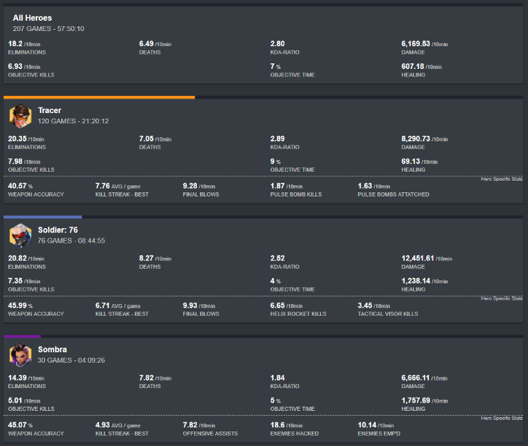

OverTrack keeps records of your competitive matches - Skill Rating, Win/Loss/Draw, Eliminations, Healing, Damage, Objective Time, and more.
No longer is there a need to manually enter match data into a form or spreadsheet; OverTrack does all this automatically!
OverTrack records the map, result, heroes played and SR changes of all your matches.
All this is done by the OverTrack client passively recording and reading the screen of Overwatch, which, for the purposes of this program Blizzard has confirmed they do not consider a cheat.
OverTrack also records details from each game that would otherwise be impossible to remember in the heat of play including:
OverTrack will record statistics whenever you press tab. This allows tracking on both a per-game (shown above) and overall level.
